Математические и логические операции в Java
На базовом уровне компьютеры оперируют только числами. Даже в прикладных программах на высокоуровневых
языках внутри много чисел и операций над ними.
К счастью, для старта достаточно знать обычную арифметику — с нее и начнем.
Для сложения двух чисел в математике мы пишем, например, 3 + 4. В программировании — то же самое. Вот
программа, складывающая два числа:

Если запустить эту программу на выполнение, то она тихо отработает и завершится. На экран ничего не будет
выведено. Операция сложения, как и остальные операции, сама по себе ничего не делает, кроме сложения.
Чтобы воспользоваться результатом сложения, его нужно вывести на экран:
 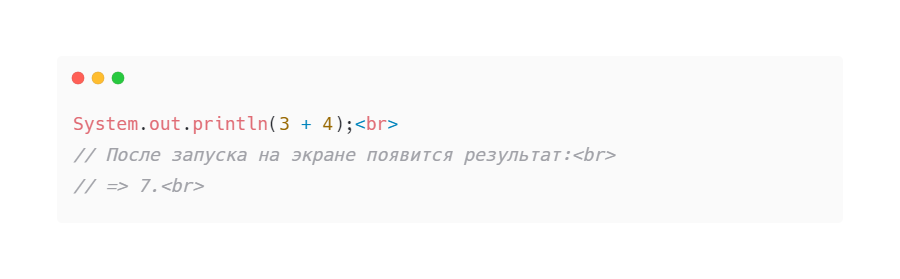
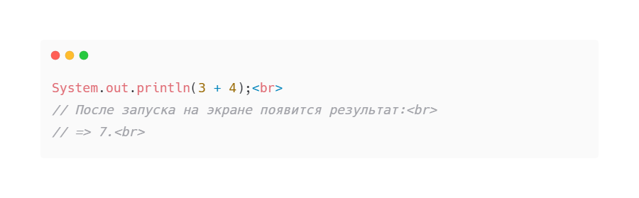
Кроме сложения доступны следующие операции:
• * — умножение
• / — деление
• - — вычитание
• % — остаток от деления
Теперь давайте выведем на экран результат деления, результат возведения в степень и результат вычисления
остатка от деления:

Операторы.
Перед тем, как двигаться дальше, разберем базовую терминологию. Знак операции, такой как +, называют
оператором.
Оператор — просто символ, который выполняет операцию, например, сложение:
 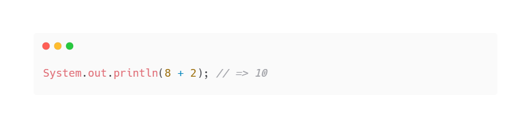
В этом примере + — это оператор, а числа 8 и 2 — это операнды.
В случае сложения у нас есть два операнда:
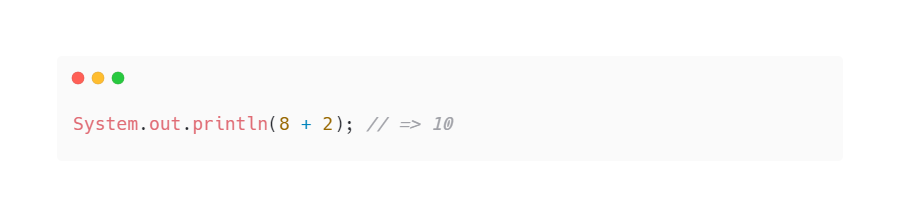
В этом примере + — это оператор, а числа 8 и 2 — это операнды.
В случае сложения у нас есть два операнда:
• Один слева
• Другой справа от знака +
Операции, которые требуют наличия двух операндов, называются бинарными. Если пропустить хотя бы один
операнд, то
программа завершится с синтаксической ошибкой. Например:
• `3 + ;`
Операции бывают не только бинарными. Бывают еще:
• Унарные — с одним операндом.
• Тернарные — с тремя операндами.
Причем операторы могут выглядеть одинаково, но обозначать разные операции:
 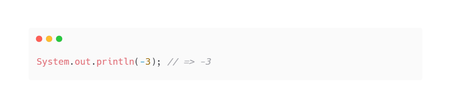
Выше пример применения унарной операции к числу 3. Оператор «минус» перед тройкой говорит интерпретатору —
возьми число 3 и найди противоположное, то есть -3.
Это немного может сбить с толку, потому что -3 — это одновременно и число само по себе, и оператор с
операндом,
но у языков программирования такая структура.
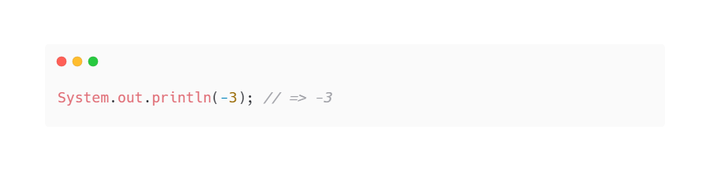
Выше пример применения унарной операции к числу 3. Оператор «минус» перед тройкой говорит интерпретатору —
возьми число 3 и найди противоположное, то есть -3.
Это немного может сбить с толку, потому что -3 — это одновременно и число само по себе, и оператор с
операндом,
но у языков программирования такая структура.
Коммутативная операция.
Мы все помним со школы: «от перемены мест слагаемых сумма не меняется». Это один из базовых и интуитивно
понятных принципов арифметики — коммутативный закон.
Бинарная операция считается коммутативной, если, вы получаете тот же самый результат, поменяв местами
операнды.
Очевидно, что сложение — коммутативная операция:
• 3 + 2 = 2 + 3
А вот вычитание — это не коммутативная операция:
• 2 - 3 ≠ 3 - 2
В программировании этот закон работает точно так же, как в арифметике. Более того, большинство операций не
являются коммутативными. Отсюда вывод: всегда обращайте внимание на порядок того, с чем работаете.
Композиция операций.
А что, если понадобится вычислить такое выражение: 3 + 5 - 2? Именно так мы и запишем:
 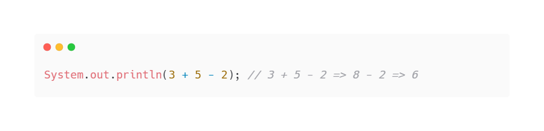
Обратите внимание, что компьютер производит арифметические вычисления в правильном порядке: сначала деление
и умножение, потом сложение и вычитание. Иногда этот порядок нужно изменить — об этом немного далее.
Или другой пример:
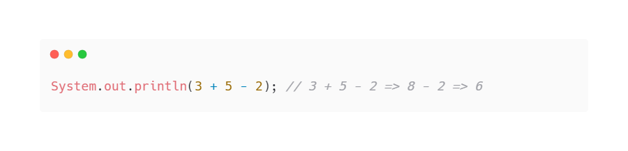
Обратите внимание, что компьютер производит арифметические вычисления в правильном порядке: сначала деление
и умножение, потом сложение и вычитание. Иногда этот порядок нужно изменить — об этом немного далее.
Или другой пример:
 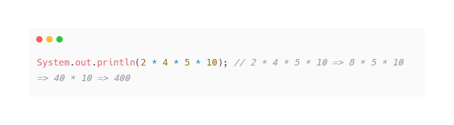
Как видно, операции можно соединять друг с другом и таким образом вычислять все более сложные составные
выражения. Чтобы представить себе то, как происходят вычисления внутри интерпретатора, давайте разберем
пример:
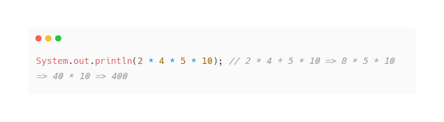
Как видно, операции можно соединять друг с другом и таким образом вычислять все более сложные составные
выражения. Чтобы представить себе то, как происходят вычисления внутри интерпретатора, давайте разберем
пример:
• 2 * 4 * 5 * 10
В этом примере:
Сначала вычисляем 2 * 4 и получаем выражение 8 * 5 * 10.
Затем умножаем 8 * 5. В итоге имеем 40 * 10.
В конце концов происходит последнее умножение, и получается результат 400.
Приоритет операций.
Посмотрите внимательно на выражение 2 + 2 * 2 и посчитайте в уме ответ. Правильный ответ: 6. Если у вас
получилось 8, то этот урок для вас.
В школьной математике мы изучали понятие «приоритет операции». Приоритет определяет, в какой
последовательности должны выполняться операции.
Например, умножение и деление имеют больший приоритет, чем сложение и вычитание:
• 2 + 3 * 2 = 8
Но нередко вычисления должны происходить в порядке, отличном от стандартного приоритета. В сложных ситуациях
приоритет можно задавать круглыми скобками, точно так же, как в школе, например:
• (2 + 2) * 2
Скобки можно ставить вокруг любой операции. Они могут вкладываться друг в друга сколько угодно раз. Вот пара
примеров:
 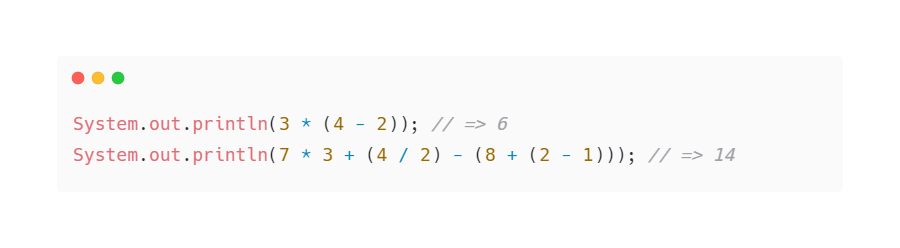
Иногда выражение сложно воспринимать визуально. Тогда можно сделать его понятнее, расставив скобки, хотя они
и не повлияют на приоритет:
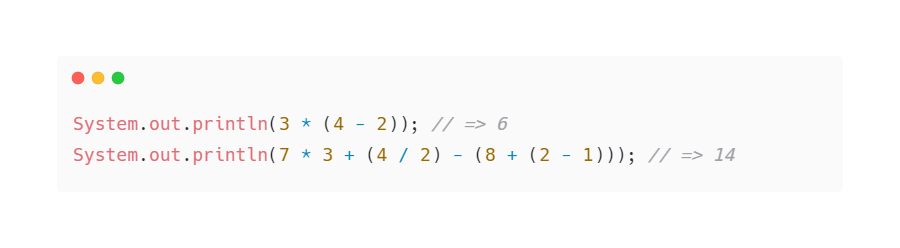
Иногда выражение сложно воспринимать визуально. Тогда можно сделать его понятнее, расставив скобки, хотя они
и не повлияют на приоритет:
Было:
 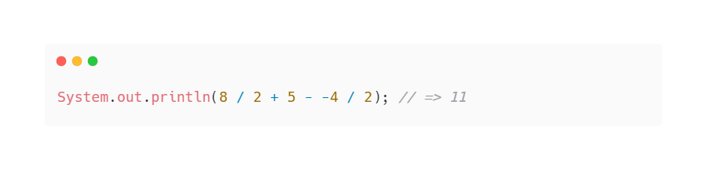
Стало:
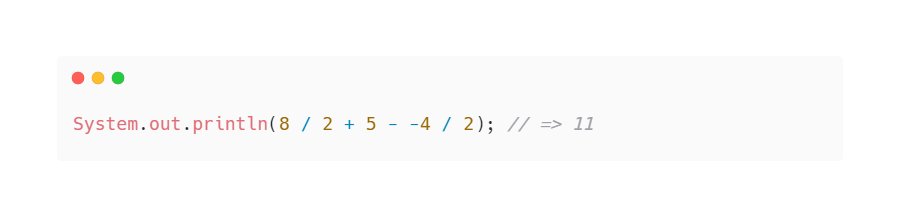
Стало:
 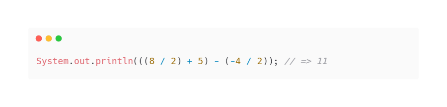
Запомните: код пишется для людей, потому что код будут читать люди, а машины будут только исполнять его. Для
машин нет «более» понятного или «менее» понятного кода, независимо от того, является ли код корректным или
нет.
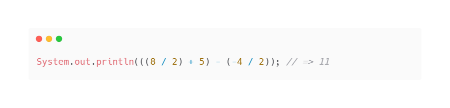
Запомните: код пишется для людей, потому что код будут читать люди, а машины будут только исполнять его. Для
машин нет «более» понятного или «менее» понятного кода, независимо от того, является ли код корректным или
нет.
Числа с плавающей точкой.
В математике существуют разные виды чисел, например:
• Натуральные — это целые числа от 1 и больше.
• Рациональные — это числа с точкой, например, 0.5.
С точки зрения устройства компьютеров, между этими видами чисел — пропасть. Попробуем сложить два
рациональных числа:
• 0.2 + 0.1 = 0.3
А теперь посмотрим, что на это скажет Java:
• 0.2 + 0.1; // 0.30000000000000004
Операция сложения двух рациональных чисел внезапно привела к неточному вычислению результата. Тот же самый
результат выдадут и другие языки программирования.
Такое поведение обуславливается ограничениями вычислительных мощностей. В отличие от чисел, объем памяти
конечен — при этом бесконечное количество чисел требовало бы бесконечного количества памяти для своего
хранения.
С натуральными числами эта проблема решается простым ограничением по верхней границе. Есть некоторое
максимальное число, которое можно ввести:
 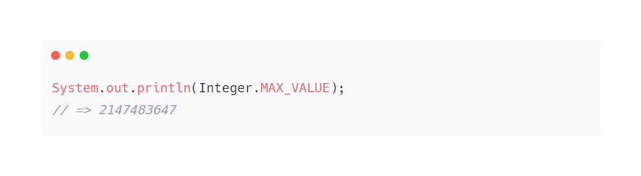
С рациональными числами такой финт не пройдет. Дело в том, что они не выстроены в непрерывную цепочку, между
0.1 и 0.2 лежит бесконечное множество чисел.
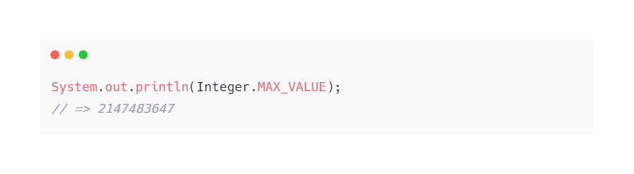
С рациональными числами такой финт не пройдет. Дело в том, что они не выстроены в непрерывную цепочку, между
0.1 и 0.2 лежит бесконечное множество чисел.
А как тогда хранить рациональные числа? Подавляющее число языков программирования в этом случае опирается на
единый стандарт, который описывает как организовывать память в таких случаях.
Разработчикам важно понимать, что операции с плавающими числами неточны, но эту точность можно регулировать.
Это значит, что при решении задач с подобными числами необходимо прибегать к специальным трюкам, которые
позволяют добиться необходимой точности.
Логические операции.
Где нужны логические операторы?
Если коротко, то в условных выражениях, которые могут включать в себя и операторы сравнения
(<,>, <=,>=,
==, !=).
При вычислении они возвращают значение булева типа.
Условные выражения, в свою очередь, применяются в операторах ветвления (if-else, switch,
тернарном).
Как применять?
Допустим, мы хотим проверить, что значение переменной a больше значений в переменных b и c. То есть
сравнить операнд a с двумя другими. Нам поможет логический оператор && (И).
Логический оператор && (И) возвращает true, если слева и справа от него стоят значения true, а иначе
— false.
Иными словами, если оба логических высказывания истинны, то и операция && (И) возвращает
истину.
Первый пример
 Как вычисляется значение выражения (a > b) && (a > c):
Как вычисляется значение выражения (a > b) && (a > c):
Сначала проверяется условие (a > b). Оно вернёт true, так как 6 больше 4. Далее проверяется условие (a > c),
которое также вернёт true, ведь 6 больше 3.
Теперь у нас с двух сторон от логического оператора && стоят значения true.
По определению выше или по таблице ещё выше, результат вычисления логического выражения (true && true) равен
true.
Второй пример
 Результат операции (a > b) вернёт true, так как 6 больше 4, а операция (a > c) уже вернёт false, так как 6
не больше 7.
Результат операции (a > b) вернёт true, так как 6 больше 4, а операция (a > c) уже вернёт false, так как 6
не больше 7.
Значит, слева от логического оператора && стоит true, а справа — false. Следовательно, результат вычисления
логического выражения (мы присвоили его булевой переменной d) будет false.
Третий пример
 Результат операции сравнения (a > b) равен false, а что вернёт операция (a > c), уже значения не имеет
(смотрите определение выше) — результат вычисления логического выражения (мы присвоили его булевой
переменной d) будет равен false.
Результат операции сравнения (a > b) равен false, а что вернёт операция (a > c), уже значения не имеет
(смотрите определение выше) — результат вычисления логического выражения (мы присвоили его булевой
переменной d) будет равен false.
Рассмотрим примеры с другими операторами.
OR
 Порядок вычисления:
Порядок вычисления:
(a > b) || (a > c)
(4 > 6) || (4 > 3)
false || (4 > 3)
false || true
true
Значение переменной d равно true.

Теперь вычисляйте вы.
XOR

 Порядок вычисления:
Порядок вычисления:
(b > a) ^ (c > a)
(6 > 5) ^ (7 > 5)
true ^ (7 > 5)
true ^ true
false
Значение d равно false.
NOT
 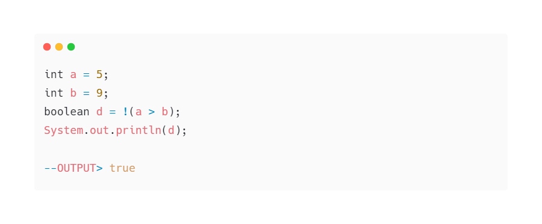
Порядок вычисления:
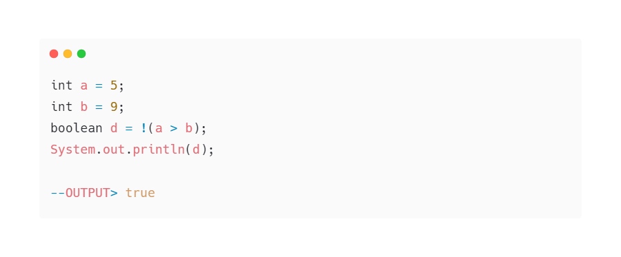
Порядок вычисления:
!(a > b)
!(5 > 9)
!false
true
Значение d стало true.
 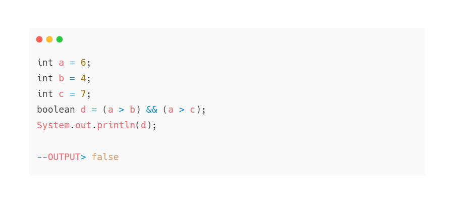
Результат операции (a > b) вернёт true, так как 6 больше 4, а операция (a > c) уже вернёт false, так как 6
не больше 7.
Значит, слева от логического оператора && стоит true, а справа — false. Следовательно, результат вычисления
логического выражения (мы присвоили его булевой переменной d) будет false.
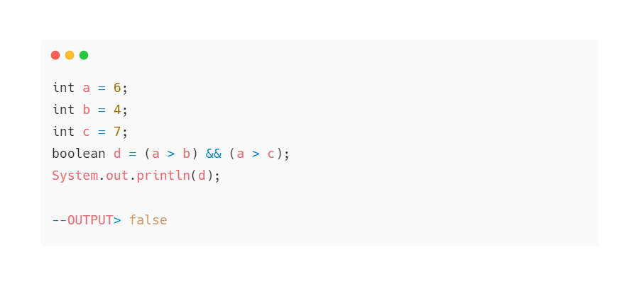
Результат операции (a > b) вернёт true, так как 6 больше 4, а операция (a > c) уже вернёт false, так как 6
не больше 7.
Значит, слева от логического оператора && стоит true, а справа — false. Следовательно, результат вычисления
логического выражения (мы присвоили его булевой переменной d) будет false.
Третий пример
 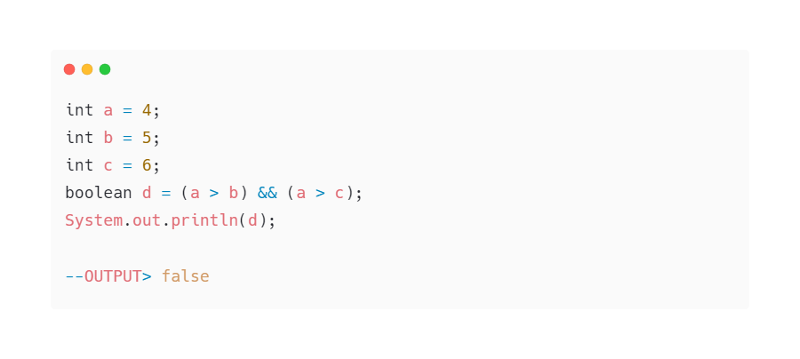
Результат операции сравнения (a > b) равен false, а что вернёт операция (a > c), уже значения не имеет
(смотрите
определение выше) — результат вычисления логического выражения (мы присвоили его булевой переменной d) будет
равен false.
Рассмотрим примеры с другими операторами.
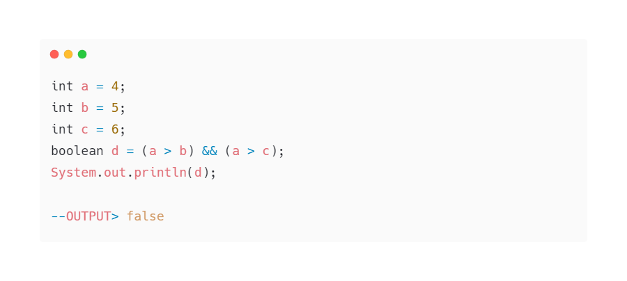
Результат операции сравнения (a > b) равен false, а что вернёт операция (a > c), уже значения не имеет
(смотрите
определение выше) — результат вычисления логического выражения (мы присвоили его булевой переменной d) будет
равен false.
Рассмотрим примеры с другими операторами.
OR
 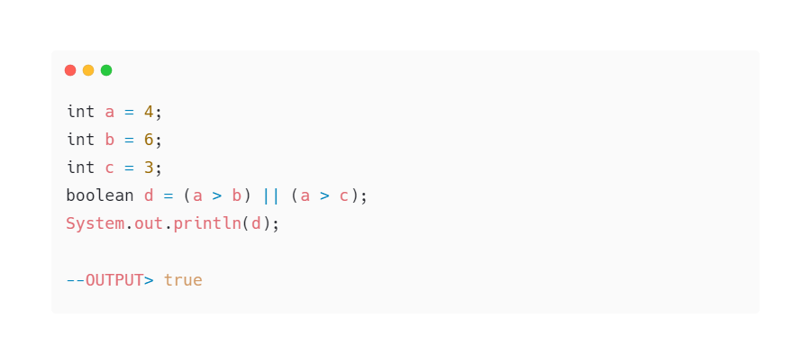
Порядок вычисления:
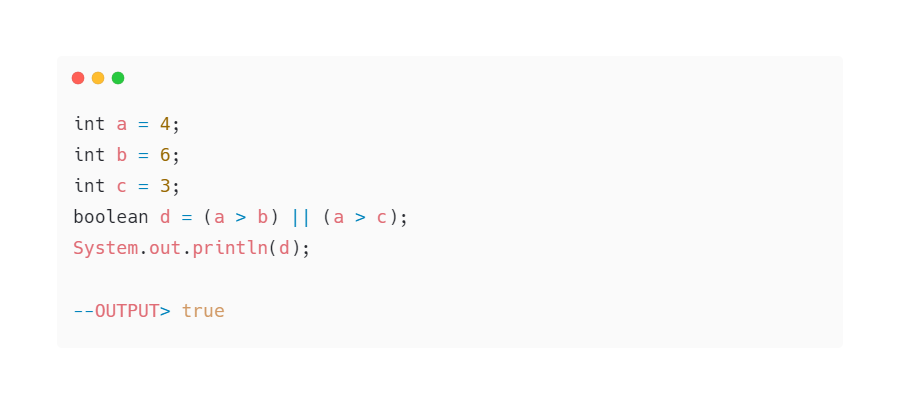
Порядок вычисления:
(a > b) || (a > c)
(4 > 6) || (4 > 3)
false || (4 > 3)
false || true
true
Значение переменной d равно true.
Теперь вычисляйте вы.
XOR
 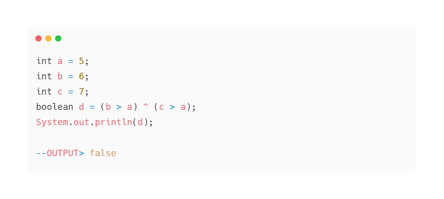
Порядок вычисления:
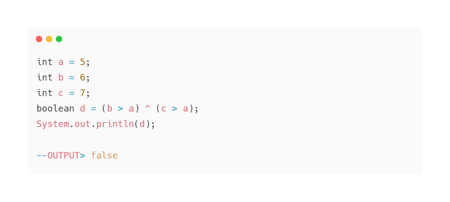
Порядок вычисления:
(b > a) ^ (c > a)
(6 > 5) ^ (7 > 5)
true ^ (7 > 5)
true ^ true
false
Значение d равно false.
NOT

 Порядок вычисления:
Порядок вычисления:
!(a > b)
!(5 > 9)
!false
true
Значение d стало true.